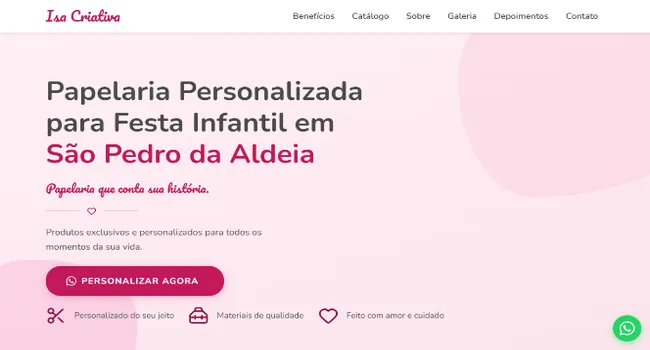
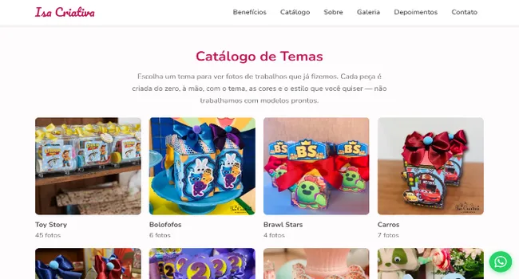
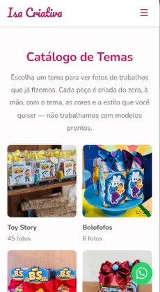
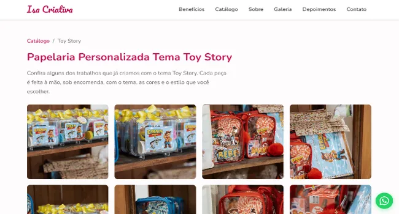
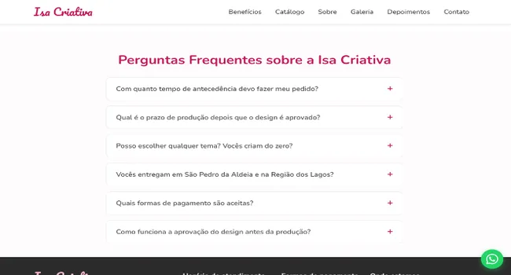
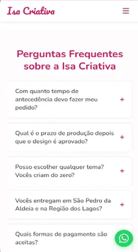

Desenvolvedor Frontend & Especialista em SEO/Marketing Digital
Transformo ideias em sites que aparecem no Google.
Construo sites do zero — da estrutura ao código — e aplico estratégias de SEO local para que o seu negócio seja encontrado por quem já está procurando por ele.

Sou formado em Análise e Desenvolvimento de Sistemas e venho construindo minha trajetória na fronteira entre tecnologia, dados e comunicação digital. Hoje aplico esse conhecimento tanto na criação de sites e experiências web quanto na otimização de negócios locais para SEO — sempre buscando unir código bem estruturado a resultados reais.
- Português (Nativo)
- Inglês (Intermediário/Técnico)
- São Pedro da Aldeia, RJ
Case Study
Isa Criativa — Papelaria Personalizada
O desafio
Posicionar um negócio local de papelaria personalizada no Google, competindo com concorrentes de toda a Região dos Lagos, e converter visitas em pedidos via WhatsApp.
O que desenvolvi
Resultado
Site publicado e em operação ativa, gerando contato direto via WhatsApp para orçamentos.
Estratégia
Marketing Digital & SEO
Estratégia de SEO aplicada (Isa Criativa)
- Palavra-chave geográfica no title e na meta description
- NAP consistente (nome, endereço, telefone e horário) no rodapé
- Arquitetura de conteúdo em silo — página de catálogo com sub-páginas por tema
- FAQ estruturado, pronto para rich snippets no Google
- Metadados sociais completos (Open Graph e Twitter Card)
Ferramentas de criação
Aplicadas na criação de conteúdo visual e vídeos institucionais para redes sociais.





Diferencial
Administrativo & Dados
Business Intelligence
Power BI e Excel avançado para dashboards e relatórios gerenciais.
Certificação Digital
Gestão e conformidade legal de certificados digitais corporativos.
Automação de Processos
Organização de fluxos de trabalho via Monday e otimização operacional.
Experiência real
Câmara Municipal de São Pedro da Aldeia (BI) e Mediccont Assessoria (certificação digital).
Trajetória
Formação & Certificações
-
2022
Graduação em Análise e Desenvolvimento de Sistemas
Universidade Estácio de Sá
-
Curso
Desenvolvimento Web (HTML5 e CSS3)
Módulos de Estruturação, Layout e Variáveis CSS
-
Curso
HTML5 e CSS3 Parte 1
Criação de Páginas Web Responsivas
-
Curso
SEO — Módulo 01
Otimização para Mecanismos de Busca
-
Curso
Engenharia de Prompt
Prompts eficazes para IA Generativa
Processo
Como eu trabalho
-
01
Briefing
Entendo o negócio, o público e os objetivos antes de qualquer linha de código.
-
02
Design & Aprovação
Alinhamos estrutura e visual antes de partir para o desenvolvimento.
-
03
Desenvolvimento
Construção do site com código limpo, responsivo e performático.
-
04
Entrega & SEO
Publicação com otimizações de SEO já aplicadas desde o primeiro dia.